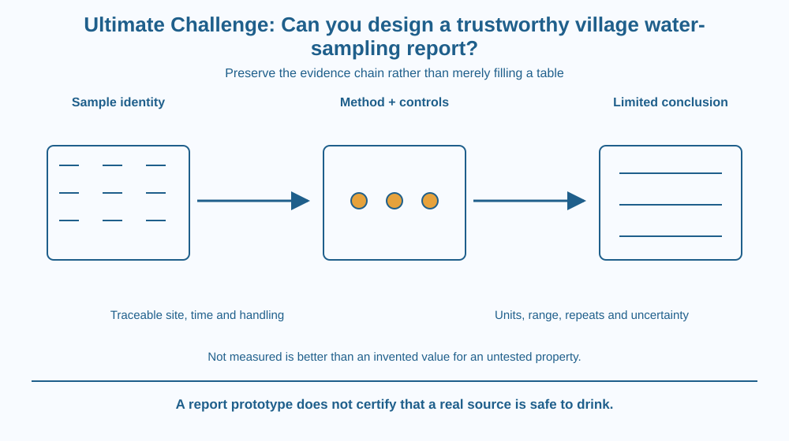

Design a trustworthy water-investigation report rather than a collection of unlabelled readings. Integrate sample identity, control pathways, calibration, comparable procedures and uncertainty. Your output is a report-and-method prototype, not a certificate that a village water source is safe to drink.
Three fictional sites appear in a report, but their collection times are missing. One bottle was reused, no blank was included and a colour reading was converted to concentration using an unexplained rule. The table looks complete because every cell has a number.
Does filling the table make the evidence trustworthy? No. The reader cannot trace several values to a clear procedure or separate sample content from background contributions.
Your challenge is to redesign the information chain so the report makes its observations, methods and limits understandable before anyone draws a practical conclusion.
Begin with a specific question, such as comparing one defined property across identified fictional sites under comparable procedures. A broad claim about all water quality requires many kinds of evidence and cannot be supported by one convenient colour measurement.
Sample identity links each record with a location label, time, container and handling history. A value without those connections can be impossible to interpret later. The report must distinguish a sample code from a test result.
Comparable sampling reduces avoidable method differences. The relevant location, depth or outlet condition must be defined according to the actual professional method. Students design these fields on paper rather than collecting potentially unsafe water themselves.
A blank follows a specified target-free control route to assess introduced response. Its pathway should be drawn explicitly. A laboratory-only blank cannot check field handling it never experienced, so writing control used is not enough.
Known standards support an appropriate calibration relation for a defined measurement. The report should state units, supported range and whether the unknown lies within it. A raw signal is not automatically a concentration or a complete water-safety result.
Repeats preserve information about variation. Keep individual readings, common timing and method notes. Repetition does not automatically remove a shared calibration bias or repair a contaminated container.
Uncertainty and missing information belong in the report. Use not measured, unknown or outside validated range where appropriate instead of inventing a number to complete a layout. A clear limitation is more useful than false precision.
Finally separate observation, interpretation and decision. A measured property can support a limited comparison while leaving pathogens or other contaminants untested. Actual drinking-water decisions require appropriate validated testing and responsible local expertise, beyond this classroom prototype.
Draw a chain from question to sample identity, method, controls, calibrated result and conclusion. Put a traceable record beside every link. A missing link marks a specific weakness rather than a vague feeling that the project was not scientific enough.
Now add an uncertainty column that travels with the result. Do not detach the caveat and leave only the attractive number in the summary. Someone reading the conclusion should know which limits affect it.
Make the report's strongest claim no broader than its weakest necessary evidence link. This is the design principle: the final wording must fit what was actually measured and controlled, not what the team hoped its equipment could establish.
The SVG shows three fictional site codes feeding into labelled records. Parallel sample, blank and standard pathways lead to an evidence table with units and uncertainty notes.
A final conclusion box has separate fields for supported comparison and unanswered questions. No actual water-quality values or safe-use labels are supplied. The diagram highlights traceability rather than pretending a complete-looking table is a complete analysis.
The apparatus icons are conceptual. The lesson does not provide a field collection protocol for children, a chemical test recipe or a claim about any real village, well, tap or pond.

Water reports can influence important decisions, so method and interpretation need to remain connected. A laboratory number copied without units or source context can lose much of its meaning.
In a school project, fictional records or professionally supplied data allow students to practise critical reporting without handling unsafe samples. A responsible teacher can identify which evidence comes from an actual validated test and which part is a classroom model.
This challenge differs from the earlier generic physics-model task. The product is an auditable evidence report with specific control and calibration logic, not a general explanation of any chosen phenomenon.
Use paper, a pencil and three fictional site labels. Do not collect or taste water.
Leave unmeasured values blank or explicitly marked not measured. The five-minute output is a prototype report, not experimental evidence. Ask a partner to find a conclusion that the current fields would not support and revise the design accordingly.
Why can an honest not measured entry make a report more trustworthy than a plausible-looking invented value? Connect the answer to traceability and the scope of conclusions.
Now imagine a perfect calibration but a sample label lost during transport. Which part of the evidence chain fails? Accuracy at one stage does not recover identity information that was never preserved.
What should link every reported result to its source?
Answer: B — Traceable records connect the value with where, when and how it was obtained.
Why must a blank pathway be described?
Answer: A — Control coverage depends on the handling route represented.
One property was measured but several hazards were not tested. What is the best conclusion?
Answer: C — The conclusion should match measured evidence and preserve the unknowns.
Deliver a one-page report template plus a method diagram. Include identity, timing, controls, standards, units, repeats, uncertainty and the separation between observations and interpretations.
Peer-review it using three questions: can every result be traced, does each control cover the intended pathway, and do conclusions stay within measured properties? Revise one weakness. End with a statement that no drinking-water certification follows from the paper prototype alone.
A report can become stronger by making its limits easier to see. Empty evidence is not repaired by a full-looking table. Clear missing-information labels help direct the next investigation and prevent an unsupported practical decision, which is a useful scientific outcome in its own right.
A trustworthy water report connects sample identity, controls, calibration and uncertainty to limited conclusions; unmeasured hazards remain unanswered rather than silently absent.